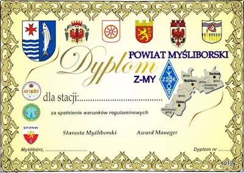

DYPLOM „POWIAT MYŚLIBORSKI”
{kind=link}
Z dniem 8 sierpnia 2012 roku Starosta Myśliborski Arkadiusz Mazepa objął honorowym patronatem przedsięwzięcie DYPLOM „POWIAT MYŚLIBORSKI”, jakim jest uzyskanie przez krótkofalowców dyplomu za nawiązanie regulaminowych łączności z amatorskimi radiostacjami pracującymi w Powiecie Myśliborskim
Dyplom „Powiat Myśliborski”
Dyplom wydaje Myśliborski Klub Łączności Polskiego Związku Krótkofalowców SP1PMY, przy współpracy
Barlineckiego Klubu Krótkofalowców PZK SP1KRF w Barlinku i Klubu Łączności PZK SP1PNW w Dębnie.
Dyplom mogą uzyskać nadawcy i nasłuchowcy za spełnienie jednego z warunków:
Obowiązuje przesłanie wyciągu z logu na adres:
Stefan Jaworski – Myśliborski Klub Łączności PZK SP1PMY,
ul. Tuwima 12,
74-300 Myślibórz
Do zgłoszenia należy dołączyć 5 znaczków na listy zwykłe.
Opłata dla stacji zagranicznych 5 Euro lub 5 IRC.
Dyplom mogą uzyskać nadawcy i nasłuchowcy za spełnienie jednego z warunków:
- przeprowadzenie 3 łączności lub 3 nasłuchów; w tym 1 ze stacją okolicznościową (np. SN0MD, SN0LOT i inne) nadającą z terenu powiatu myśliborskiego i 2 z dowolnymi stacjami pracującymi w powiecie myśliborskim;
- przeprowadzenie łączności (nasłuchów) ze stacjami klubowymi z Barlinka (SP1KRF, 3Z1K), Dębna (SP1PNW) i Myśliborza (SP1PMY); – czyli 3 nasłuchy lub QSO;
- przeprowadzenie 5 łączności (nasłuchów) ze stacjami nadającymi z terenu powiatu myśliborskiego, w tym obowiązkowo 1 łączność (nasłuch) ze stacją klubową pracującą w powiecie myśliborskim (SP1KRF, SP1PMY lub SP1PNW);
- przeprowadzenie 7 łączności (nasłuchów) ze stacjami indywidualnymi nadającymi z powiatu myśliborskiego.
Obowiązuje przesłanie wyciągu z logu na adres:
Stefan Jaworski – Myśliborski Klub Łączności PZK SP1PMY,
ul. Tuwima 12,
74-300 Myślibórz
Do zgłoszenia należy dołączyć 5 znaczków na listy zwykłe.
Opłata dla stacji zagranicznych 5 Euro lub 5 IRC.
Rules of the „Powiat Myśliborski” ( „Myślibórz Contry”) Diploma
The “Powiat Myśliborski” Diploma is under the honorary patronage of the Starosta Myśliborski (Head
of the Myślibórz County).
The Diploma is issued by Myślibórz Amateur Radio Club PZK SP1PMY, with cooperation of Barlinek Amateur Radio Club PZK SP1KRF and Amateur Radio Club PZK SP1PNW of Dębno.
Diploma can be obtained by transmitter operators and listeners for fulfilment of one of the requirements:
Application with excerpt from logbook should be sent to the addres:
Stefan Jaworski – Myśliborski Klub Łączności PZK SP1PMY,
ul. Tuwima 12,
74-300 Myślibórz
POLAND
To the application must be attached 5 post stamps for normal letters.
Fee for foreign radio stations is 5 Euro or 5 IRCs..
The Diploma is issued by Myślibórz Amateur Radio Club PZK SP1PMY, with cooperation of Barlinek Amateur Radio Club PZK SP1KRF and Amateur Radio Club PZK SP1PNW of Dębno.
Diploma can be obtained by transmitter operators and listeners for fulfilment of one of the requirements:
- conducting 3 contacts or 3 listenings; including at least 1 with special events station (eg. SN0MD, SN0LOT and others) and with 2 any other stations working in Myślibórz County whatsoever;
- conducting contacts (listenings) with club stations from Barlinek (SP1KRF, 3Z1K), Dębno (SP1PNW) and Myślibórz (SP1PMY) – i.e. 3 listenings or QSOs;
- conducting 5 contacts (listenings) with stations transmitting from the area of Myślibórz County, including 1 obligatory contact (listening) with club station working in Myślibórz County (SP1KRF, SP1PMY or SP1PNW;
- conducting 7 contacts (listenings) with distinctive private stations transmitting from Myślibórz County.
Application with excerpt from logbook should be sent to the addres:
Stefan Jaworski – Myśliborski Klub Łączności PZK SP1PMY,
ul. Tuwima 12,
74-300 Myślibórz
POLAND
To the application must be attached 5 post stamps for normal letters.
Fee for foreign radio stations is 5 Euro or 5 IRCs..
Wykaz nadawców z powiatu Myśliborskiego
List of radio amateurs transmiting from Myślibórz Contry
SO1AAB, SO1AAG, SP1FMW, SP1FYJ, SP1IVL, SP1JJY, SP1WWS, SP1WVP, SP1ZHB, SP1ZHP, SP3DRY, SP3FPF, SP3LPR,
SP3VAX, SP3WWB, SQ1DNS, SQ1DWS, SQ1FTZ, SQ1FYR, SQ1GZS, SQ1KSL, SQ1KSM, SQ1KTQ, SQ1KTR, SQ1KTT, SQ1MNF,
SQ1MNG, SQ1MNK, SQ1NXN, SQ1NXZ, SQ1OHA, SQ1OHC, SQ1PRK, SQ1PRL, SQ1REZ, SQ1SMB, SQ1SNU, SQ1SNW, SQ1SOB,
SQ1TAR, SQ1TAW, SQ1VAA...Wkaz zaliczanych stecji okolicznościowych
List of radio amateurs transmiting from Myślibórz Contry
3Z1LATO, 3Z80LOT, HF1JESIEN, HF1LATO, HF1WIOSNA, HF1ZIMA, HF735B, HF80LOT,SN0DMY, SN0EL, SN0GBS, SN0LOT,
SN0MD, SN1JESIEN, SN1LATO, SN1WIOSNA, SN1WOSP, SN1ZIMA, SN15WJK, SN35SMAK, SN40KRF, SN40LT, SN50MKS,
SN750K, SN80AAG, SN80FMW,SN80JJY, SN80KTR, SN80LOT, SN80MNG, SN80MNK, SN80PRK, SN80SNU, SN80TAW,
SN80WWS, SN90IARU, SN82LOT, SN83LOT, SN84LOT, SN85LOT, SN86LOT,, SN0LT, SN75PW...Wykaz wydanych dyplomów WYDANYCH DYPLOMÓW
List of issued diplomas
| Nr | Znak |
| 001 | SP1PMY |
| 002 | SQ1SNU |
| 003 | SP1-14036 |
| 004 | SO1AAG |
| 005 | SQ1TAW |
| 006 | SQ3LVC |
| 007 | SP1RWU |
| 008 | SQ1KTR |
| 009 | SQ9LOM |
| 010 | SQ1GQZ |
| 011 | SP1PNW |
| 012 | SP1KRF |
| 013 | SQ3ODX |
| 014 | SQ3KKR |
| 015 | SQ8JLS |
| 016 | SQ7PGR |
| 017 | SP9NRO |
| 018 | SP2MSF |
| 019 | SP7MFU |
| 020 | LY1SR |
| 021 | SP1-007ZSG |
| 022 | DL2NAI |
| 023 | SQ4IOH |
| 024 | SP3UCM |
| 025 | SQ7EQB |
| 026 | SQ2AHL |
| 027 | SP8TJK |
| 028 | SP1TMD |
| 029 | SP3HGD |
| 030 | SP5EWX |
| Nr | Znak |
| 031 | S53EO |
| 032 | SQ9MEQ |
| 033 | SQ9MEP |
| 034 | LY5O |
| 035 | SP8NTC |
| 036 | OH3GZ |
| 037 | YL2GQK |
| 038 | SQ9OZF |
| 039 | UA4L |
| 040 | SQ3PMX |
| 041 | SQ9BDB |
| 042 | SQ3DWH |
| 043 | SP7AH |
| 044 | DE0WRL |
| 045 | SO1TH |
| 046 | DL1HRN |
| 047 | SP2SCS |
| 048 | SO5MAX |
| 049 | SP9WZO |
| 050 | SP3SBY |
| 051 | 3Z0WOSP |
| 052 | DL7UGO |
| 053 | SQ9MDF |
| 054 | DE3RPC |
| 055 | SP2AL |
| 056 | SQ6ODB |
| --- | --- |
| --- | --- |
| --- | --- |
| --- | --- |
{kind=link}
{kind=link}
{kind=link}
{kind=link}
{kind=link}